Homenaje a la emigración
Vigo (puerto) - 2011

Tierno Galván
Culleredo - 2004

Ánxel Fole
Lugo - 2000

«A Acarrexadora»
Marín - 2007

Alegoría de la vida y la muerte
As Pontes de García Rodríguez (cementerio) - 1992

Arco
Ourense (Polígono Industrial Pereiro de Aguiar) - 1997

Ariadna
Lugo (Escuela Politécnica Superior) - 1988

Avance
Cangas - 2005

Homenaje a Colemán y Reverter
Ourense - 2006
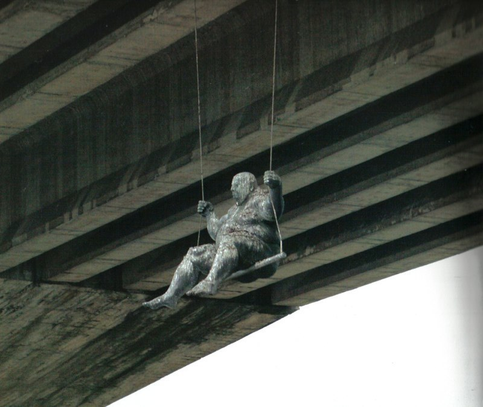
Columpio
Culleredo - 1998
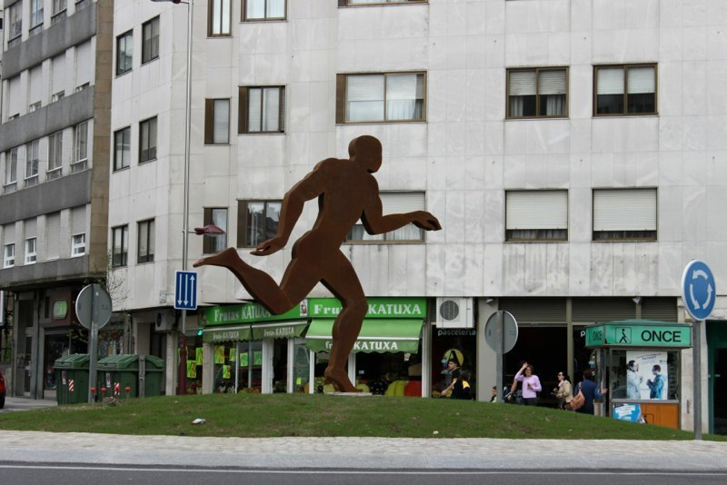
Corredor
Vigo - 2010
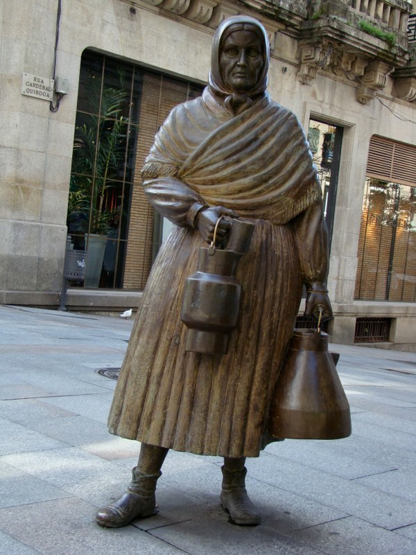
La Lechera
Ourense (Calle del Paseo) - 1999

Despertar
A Coruña (Centro Comercial Cuatro Caminos) - 1986

Ferro Couselo
Ourense - 1996
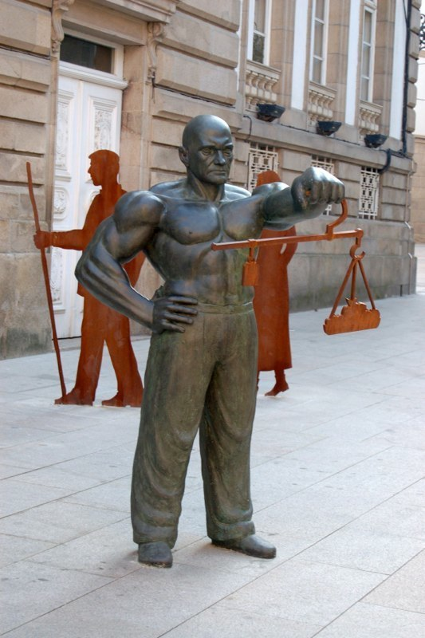
Fiel Contraste
Pontevedra - 2010
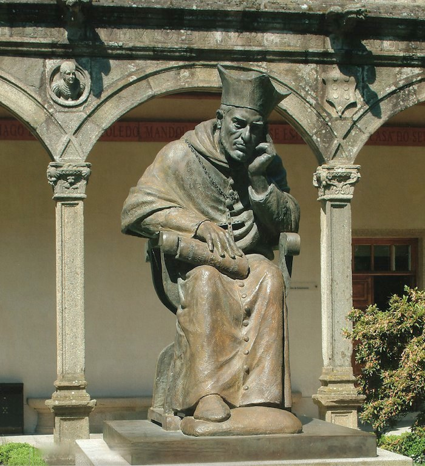
Alonso III de Fonseca
Santiago (Claustro de Pazo de Fonseca) - 1995

La Fuente
Santiago de Compostela - 1999
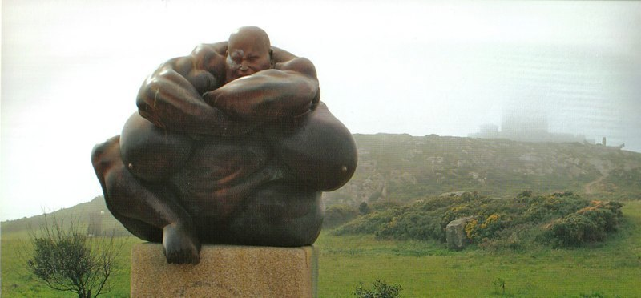
Guardían
A Coruña (Parque de la Torre de Hércules) - 1994
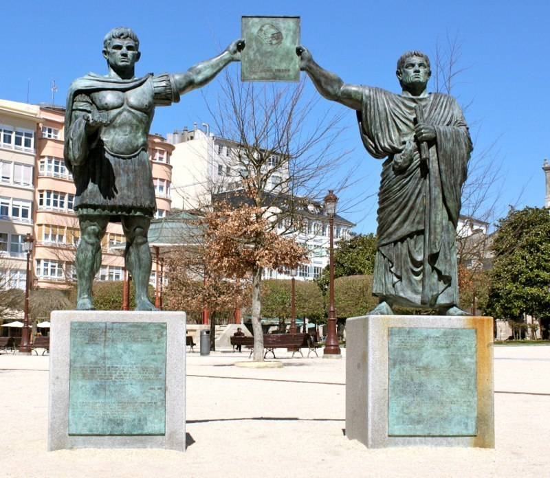
Arco de Triunfo
Lugo - 2007
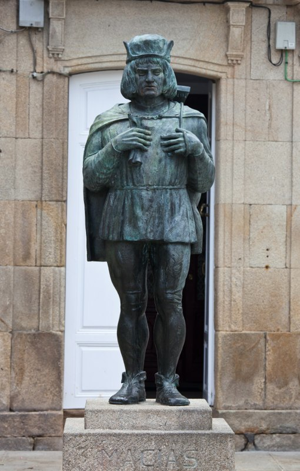
Macías «O Namorado»
Padrón - 2003

Manuel Antonio
Rianxo - 2000
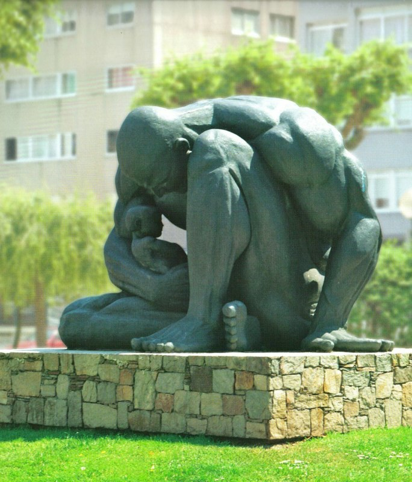
La Cueva
A Coruña (Plaza de la Sagrada Familia) - 1987
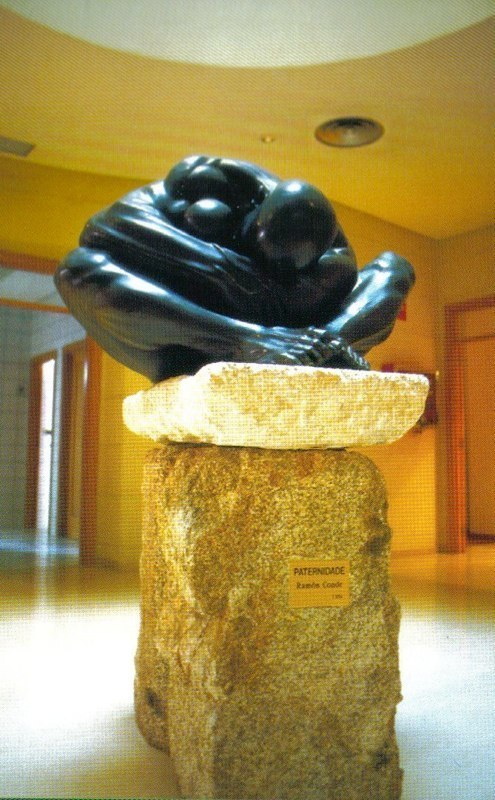
Paternidad
A Coruña (Rectorado) - 1994
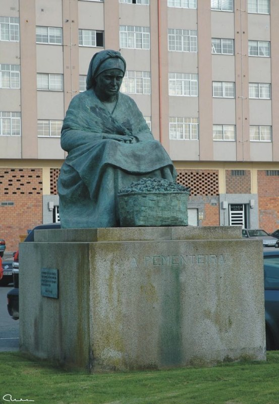
«A Pementeira»
Padrón - 2002

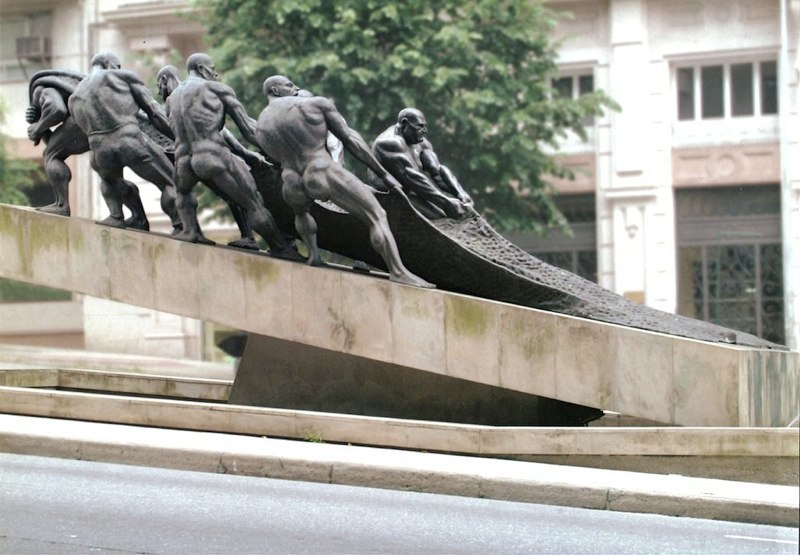
Los Rederos
(Gran Vía) - 1991

El Titán
Vigo (Hospital Álvaro Cunqueiro) - 2017

Homenaje al marinero desaparecido
Muros - 1989

Man con man
Vilagarcía de Arousa - 2004
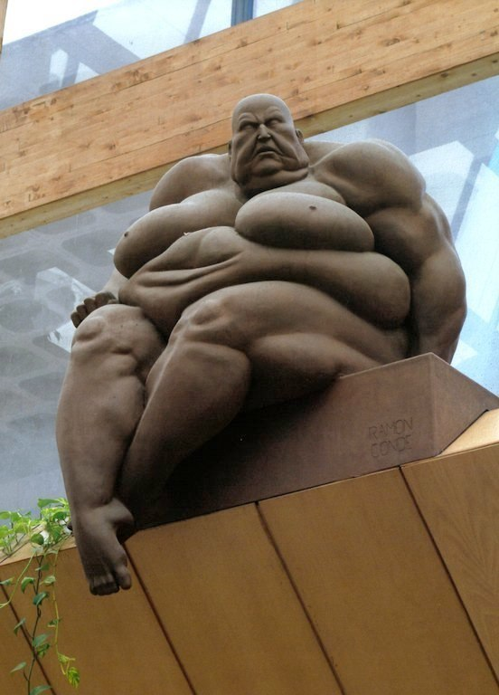
Gran Inquisidor
Vigo (Centro Comercial Camelias) - 1989
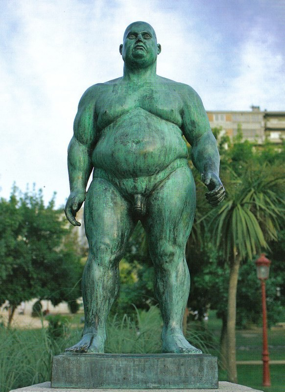
Hombre de pie
Ourense (Parque Miño) - 1996